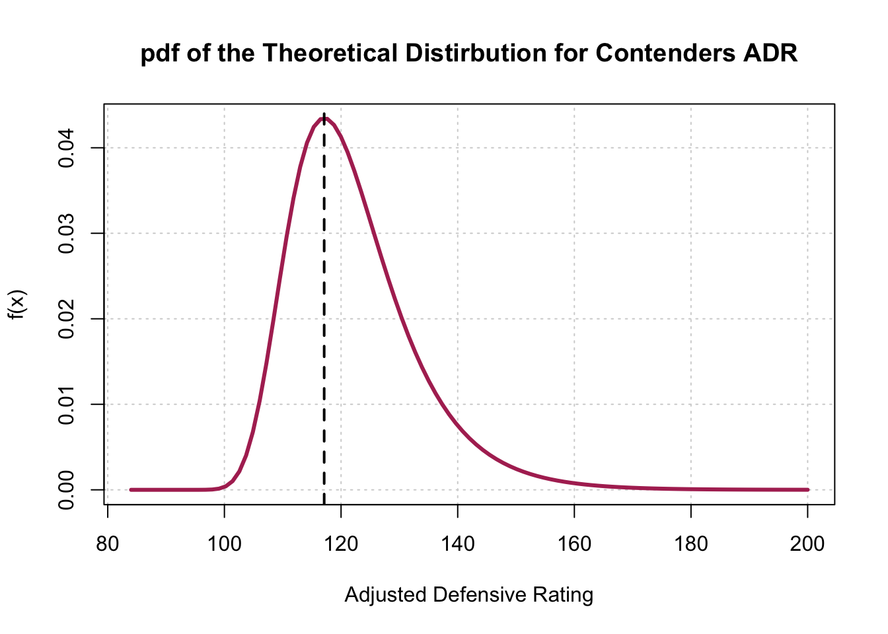

2 Introduction
There’s a common motto in the realm of collegiate and professional basketball: “Defense wins championships.” This montra has become a truism a, and every basketball fan would agree with this statement. While the statement in and on itself is taken for granted, it is rarely ever quantified to a meaningful level. The goal of this study is to estimate the maximum possible defensive rating a collegiate team can have while still being considered a “title contender”. For this study, a “title contender” is any team that made at least the final four for their respective year. To do this, 4,249 NCAA basketball teams were sampled from 2013-2025, where their identifying information, records, tournament placements, and adjusted defensive ratings were collected. This sample came from a population of all Division I College Basketball Schools that played Division I Basketball between 2013-2025, as seen in Table 1.1.
2.1 Variable of Interest
cbb$ADJD → Adjusted Defensive Rating. According to the original data source, this variable is “[an] estimate of the defensive efficiency (points allowed per 100 possessions) a team would have against the average Division I offense” (Sundberg, 2026). A higher score indicates a worse overall defense, while a lower score indicates a better defense. While a super ADR is theoretically possible, it has probability 0. The average ADR for the sample was found to be 103.6, with a minimum sample value of 84.0 and a maximum sample value of 125.3.
2.2 Research Question and Rationale
Research Question: What is the maximum defensive rating needed to be a true national championship contender in March Madness?
Reasoning: The maximum value would indicate the level of defense needed for a college basketball team to have realistic expectations of winning the entire tournament, because the higher the defensive rating, the worse a team is defensively. It would be helpful for coaches and players to know what this threshold is to manage expectations and to provide a framework of where they need to get to defensively in order to advance further in the tournament.
Hypothesized Distribution: We believe that this scenario would fit an exponential distribution, because defensive rating is a non-negative, continuous variable. However, it would be a shifted exponential because an extremely low season-long defensive rating is near impossible for teams today. We also believe that a maximum is appropriate because most champions are going to have a lower defensive rating, as it shows that the team is less likely to give up points on opposing possessions. A maximum value in this case would represent the highest defensive rating a team can have before they are no longer considered a national championship contender.
CDF and pdf:
\[ Generic \ Shifted \ Beta \rightarrow F_X(x|\beta) = \begin{cases} 1-e^{-\frac{x-L}{\beta}} & x \geq L \\ 0 & x<L\\ \end{cases} \]
\[ max(X_1,...,X_n)=T(X_1,...,X_n)\stackrel{ind}{=}P(X_1\le t)P(X_2\le t)...P(X_n\le t)=[F_X(t)]^n \]
\[ F_X(x|\beta) = [1-e^{-\frac{x-L}{\beta}}]^n, x>0 \]
\[ f_{X_i}(x|\beta)=\frac{d}{dx}F_X(x|\beta)=\frac{n}{\beta}e^{-\frac{x-L}{\beta}}[1-e^{-\frac{x-L}{\beta}}]^{n-1}, \ \ x>0 \]